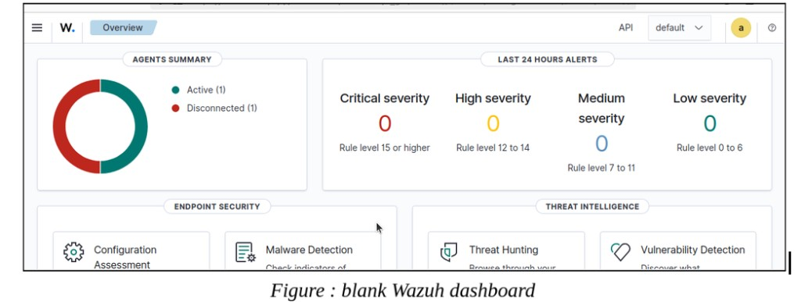
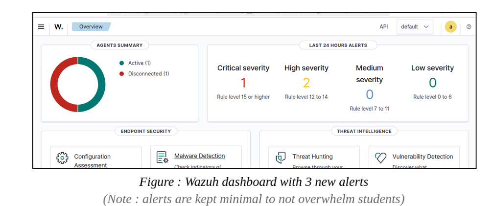
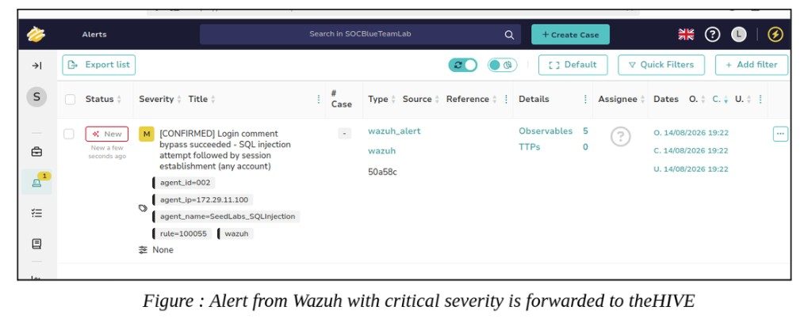
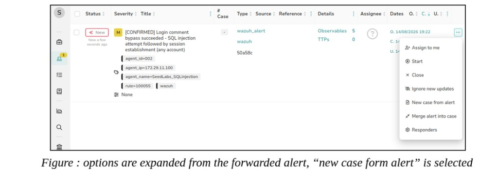
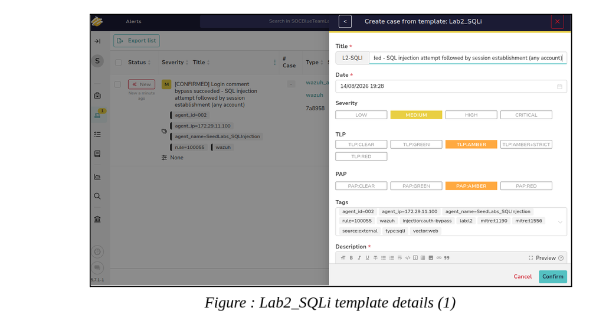
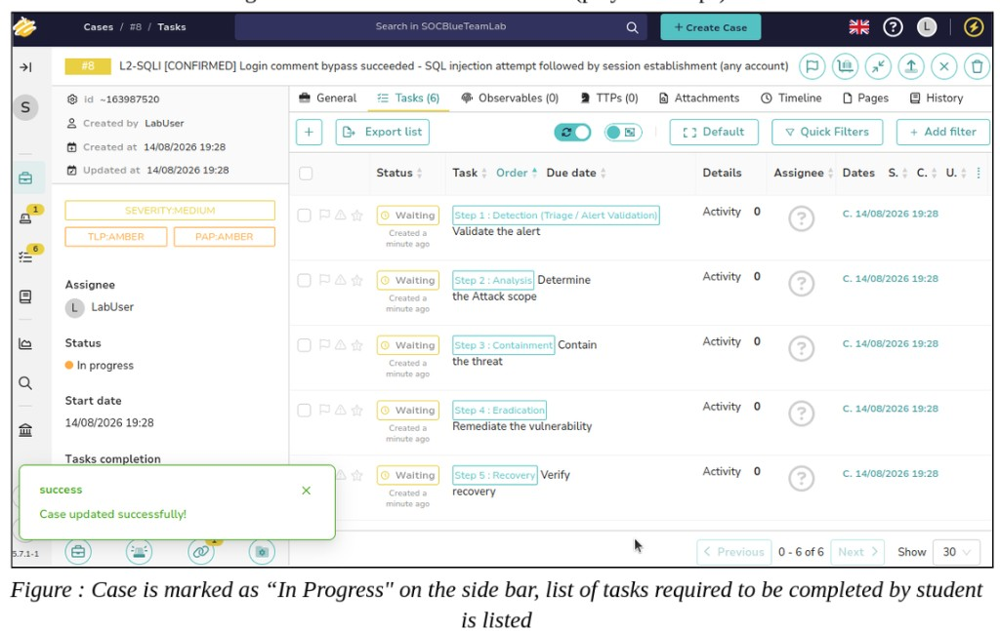
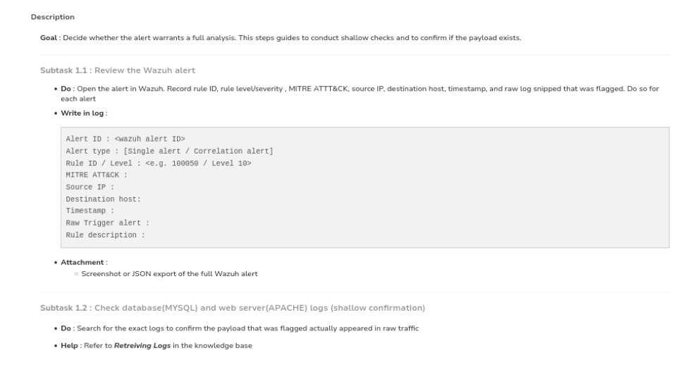
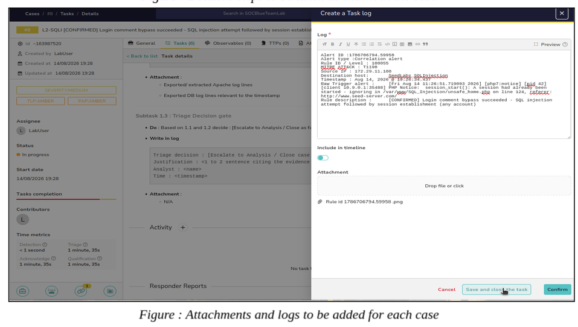
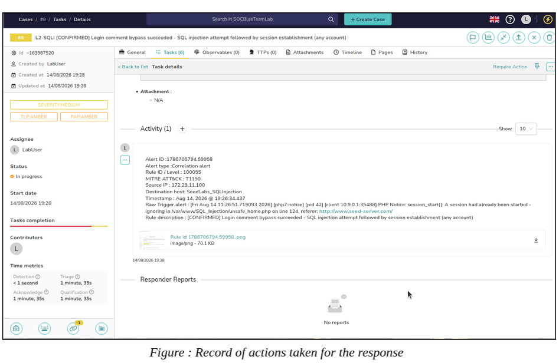
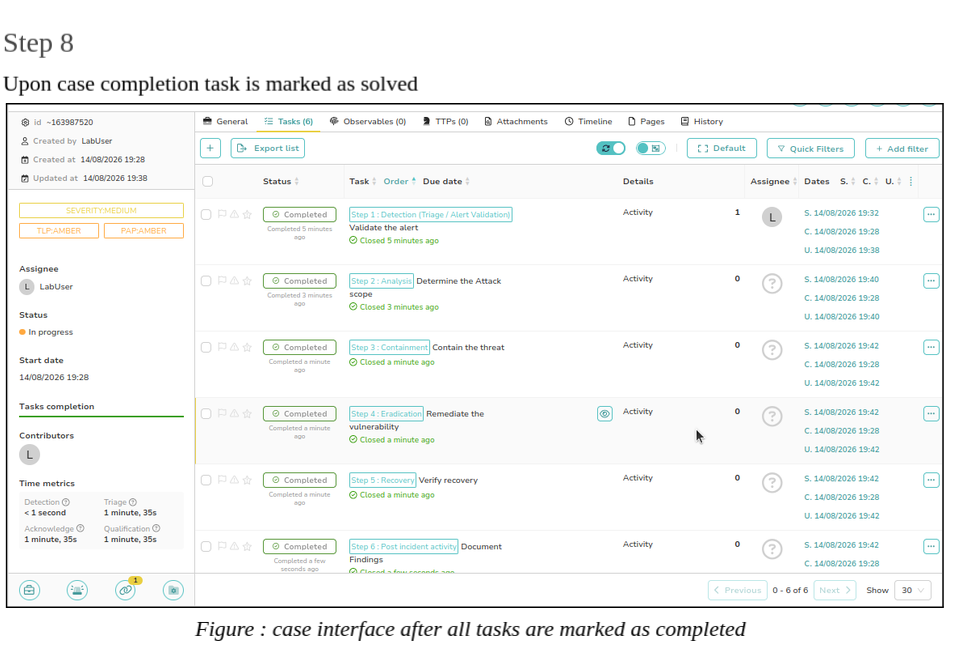

01
Step 1: Access Blank SIEM Dashboard
Student is greeted with a blank Wazuh SIEM dashboard before any security events are generated.

Students may learn defensive cybersecurity concepts theoretically but have limited opportunities to perform hands-on activities such as alert detection, log analysis, incident investigation, and response.
There is a lack of a dedicated environment where students can practice the complete blue team workflow, including detection, analysis, incident response, and case management using integrated SOC tools.
Students may spend a significant portion of practical sessions installing, configuring, integrating, and troubleshooting tools and compatibility issues instead of performing cybersecurity exercises.
Without a structured workflow connecting tools such as the SIEM, endpoint security tools, and incident response platform, students may struggle to understand how individual defensive activities are connected within a real SOC environment.
The combination of limited hands-on exposure, setup difficulties, and unclear workflows can reduce the time available for meaningful practice, potentially resulting in lower engagement, weaker practical skill development, and suboptimal learning outcomes.
| No | Research Questions(s) | Research Objectives(s) | Methods | Expected Outcome |
|---|---|---|---|---|
| 1 | What tools, architecture, configurations, and integrations are required to design and develop a low-resource blue team defense lab using open-source tools? | To identify and design a suitable blue team lab architecture by selecting appropriate open-source tools and defining their configurations, roles, integrations, and communication flow. | Literature review |
Have a validated blueprint that outlines:
|
| 2 | How are blue team activities such as alert detection, triage, incident analysis, escalation, and response carried out in real-world SOC environments? | To investigate real-world SOC workflows and procedures and incorporate relevant practices into the design and operation of the blue team lab. | Interview |
|
| 3 | How effective is the developed blue team lab in supporting detection, analysis, response, and integration of its components? | To evaluate the functionality and effectiveness of the developed lab by assessing system integration, workflow accuracy, detection performance, and response efficiency. | Experiment |
|

| Level | Function | Description |
|---|---|---|
| Basic | System shall provide hardened VM templates | VMs in lab will be installed with VM images that has been hardened based on CIS benchmarks |
| System will provide tools needed to carry out SOC lab operations | The system will be equipped with Wazuh, theHIVE and clamAV | |
| System will provide a victim node and a management node | The system will deploy a lab environment to simulate an SOC lab setup, without students intervention for setup | |
| Intermediate | System shall ensure connectivity between tools and can monitor edge devices on the management node | The system will forward logs from victim nodes to the management node to observe endpoint activities and detect threats through the centralized control |
| System will allow students to respond to incidents based on red teams attack | Students can take action when threats are detected such as executing response measures based on alerts generated during a simulated attack from the red team | |
| Students can open and create cases within case management platform | Students can formally manage incidents by creating cases in theHIVE where they can document findings, track investigation progress and organize their response | |
| Advanced | System shall support full incident response workflow | Enables students to follow a complete and structured incident response process, starting from threat detection in Wazuh, progressing to case creation and investigation in TheHive, and ending with appropriate response and recovery actions, that reflects real-world SOC practices |
| System shall be able to evaluate performance through metrics | The system will collect and analyze logs, alerts, and case data to measure performance metrics |
FYP 1 feedback highlighted that the project needed clearer evidence of technical implementation. Selecting and describing open-source SOC tools was not enough on its own — the lab also required custom configuration, integration, automation, and network management so the components would operate as one environment.
Technical work was carried out to customize, integrate, automate, and manage the different components of the SOC lab. The implementation focuses on system configuration, security monitoring, automation, containerization, and network management.
| Component | Brief Description |
|---|---|
| Wazuh XML Configuration Files | XML configuration files were used to configure Wazuh components, including custom rules and monitoring settings required to detect and classify security events. |
| Custom Decoders | Custom decoders were configured to allow Wazuh to interpret and extract relevant information from logs generated by services and security tools that are not natively supported. |
| Docker Configuration | Docker configuration files were used to define and deploy containerized services, including their images, networks, volumes, ports, and dependencies, allowing the SOC components to operate within a consistent environment. |
| Cron Jobs | Cron jobs were configured to automate recurring tasks within the SOC lab, such as scheduled scripts, maintenance operations, and synchronization processes. |
| IP Tables Routing | IP tables rules were configured to control and route network traffic between components of the lab. This supports network segmentation and ensures communication follows the intended SOC network architecture. |
SeedLabs
Student is greeted with a blank Wazuh SIEM dashboard before any security events are generated.

A simulated SQL injection attack is performed against the connected vulnerable asset.
The attack generates security events, which appear as alerts on the Wazuh dashboard.

The critical Wazuh alert is forwarded to TheHive for further investigation and case creation.

Student creates a new case using the Lab2_SQLi template, which contains the investigation playbook.


Student changes the case to In Progress and follows the playbook tasks covering Detection, Analysis, Containment, Eradication, Recovery, and Post-Incident Activity.

Student uses the Knowledge Base for guidance on log retrieval, attack identification, remediation, and modifying vulnerable files.


After completing all required tasks, the student documents the findings, completes the case details, and marks the case as Solved/Closed.


A numeric count was not recorded. Practical independence was limited in log analysis, attack identification, remediation, and case documentation.
Participants demonstrated strong understanding of the SOC workflow and were able to follow the provided incident response playbook. However, practical difficulties were observed in log analysis, attack identification, remediation, and case documentation.
Only 5 of 9 participants (56%) correctly examined the relevant logs, while 5 of 9 (56%) correctly identified the attack type. This indicates that students understood what they were supposed to do, but struggled with how to interpret the evidence required to do it.
The results suggest that the lab successfully provides a structured environment for learning the SOC workflow, but additional progressive training is required to develop independent technical execution.
Help students identify and interpret relevant logs for investigation.
Provide more specific guidance for navigating the SOC infrastructure.
Introduce SIEM navigation → log analysis → full end-to-end investigation.
Develop individual skills before requiring students to complete the full workflow independently.